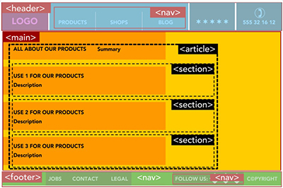
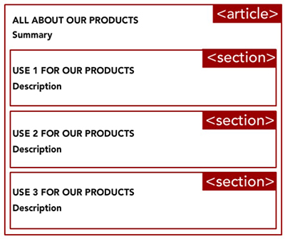

Thoughts on Semantic HTML
Semantics in HTML helps the browser to understand what to do with your website's information. Semantic tags tell the browser how content should be structured. They define what the content does. Non-semantic tags tell the browser how to display the structured content of elements. Delegating these tags to your website's content properly makes it easy for search engines to index the website's information. This article helped me learn how each semantic tag should be used for machine understanding.
Elements I Used
I used a header tag for the introductory part of the article, main for the article's primary and most relevant content, and footer for the end of the page. I chose these elements to describe and differentiate the content properly. I also included a section tag with article tag inside the main in order to differentiate an article within the main content.
Article Styling
As far as styling, I've been experimenting with the CSS grid tags to try and create a more interesting layout for my blog pages. I am trying to achieve a more dynamic look that is visually engaging. The most challenging part is to get the code, grid, and layout to do exactly what you want it to. Sometimes margins and alignment is off, or the grid doesn't do what you wanted it to, and troubleshooting that is difficult.